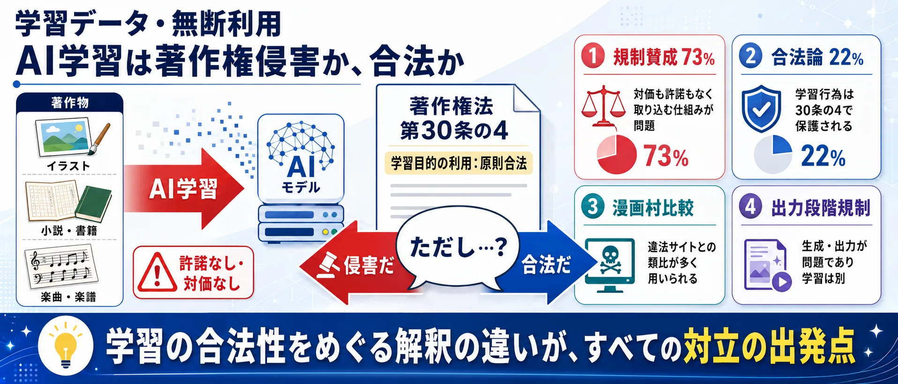
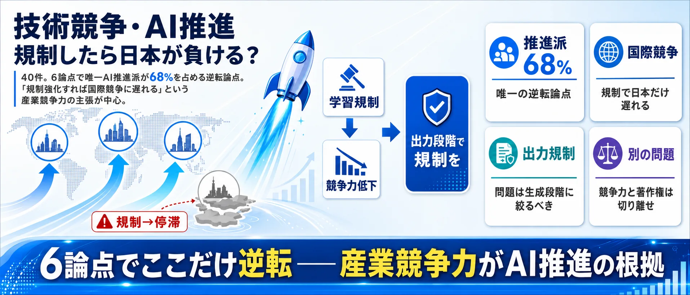
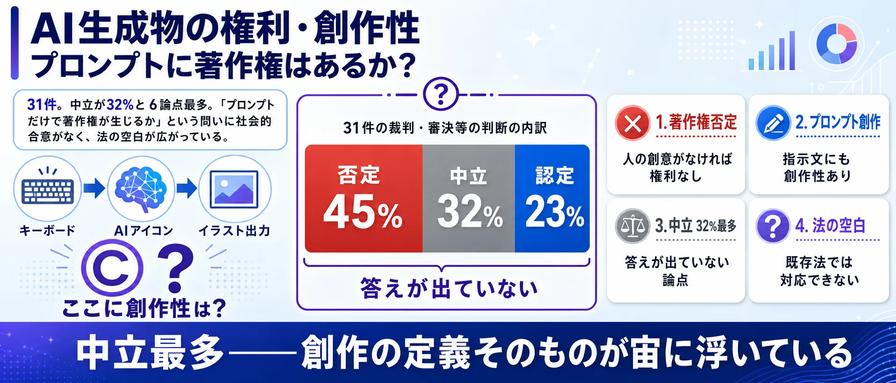

分析対象の意見
1,347件
権利保護、規制、競争力、モラルの声を整理
創作の権利を守るため、生成AIにはどこまでルールが必要か？
収集したSNS投稿のうち、分析対象となった意見1347件をAIが6つの論点に整理しました。世論調査ではなく、SNS反応サンプルの論点比較です。
権利保護、規制、競争力、モラルの声を整理
776件。無断学習への反発とクリエイター保護を重視
学習データを許諾なしで使えるかが最大争点
全面禁止ではなく、対価やオプトアウトが接点
「生成AIと著作権」の議論は「賛成か反対か」だけではありません。学習データの合法性・クリエイターの権利・法制度・競争力・モラル・AI生成物の権利——6つの論点を整理してから投票に進んでください。
学習データ・無断利用 — 「AI学習は漫画村と同じか」340件
著作物を無断でAI学習に使うことは合法か。文化庁は合法とするが、クリエイターの反発が73%を占める最多論点。

法制度・規制整備 — 「ライセンス制度は必要か」270件
許諾要件やライセンス制度など具体的な法整備を求める声が58%。規制の範囲と設計が最大の焦点。
利用者モラル・倫理 — 「AI生成と隠して使うのが問題」307件
AI生成を隠して投稿、クレジット表記なし——法律より先に使い手の倫理が問われる論点。問題視する声が64%。
クリエイター保護・権利 — 「絵師が廃業に追い込まれる」190件
「10年の作風が一瞬で真似される」。廃業の危機を訴える声が72%を占める。
技術競争・AI推進 — 「規制すれば日本が遅れる」54件
AI推進派が68%と唯一の逆転論点。規制強化は国際競争に遅れるという主張が中心。

AI生成物の権利・創作性 — 「プロンプトに著作権は生まれるか」82件
中立が32%と6論点最多。プロンプトに著作権が生じるかで社会的合意がない論点。

使い方: 6つの論点を把握してから、次の投票で「自分が一番気になる論点」を選んでください。
著作物をAIの学習に使うことの是非が議論されています。ルール強化を求める側の最も強い根拠は、著作権法30条の4が許諾を不要としている理由が「非享受目的の利用は権利者の経済的利益を通常害さない」という前提にあり、学習した作品と同じ市場に出力が供給される生成AIではその前提を問い直す必要がある、という点です。現行の枠組みを維持すべき側の最も強い根拠は、著作権が保護するのは創作的表現でありアイデアや作風ではないこと、そして実際に損害が生じるのは学習ではなく出力の公開・販売の段階で、そこは現行法でも侵害になり得ることです。争点は「学習が合法か」ではなく、対価と開示を法律で義務づけるのか、契約と技術で作るのかにあります。
学習利用にルールと対価が必要
学習そのものを一律に違法とする主張には無理があります。著作権法が保護するのは創作的表現であって、アイデアや作風は保護対象ではありません。統計的な特徴を抽出する処理は、作品を人に読ませ・見せる行為とは性質が異なります。ここは規制を求める側も認めるべき点です。
そのうえで、許諾が要らないことと、対価が要らないことは別の問題です。法30条の4が許諾を不要としているのは、「著作権者が著作物から得ている経済的利益は、知的・精神的欲求を満たすという効用の対価として支払われるものであり、非享受目的の行為は、その経済的利益を通常害するものではない」という前提に立つからです。ところが生成AIは、学習に用いた作品と同じ需要に向けて出力を供給します。前提が成り立つかどうかが変わったのであれば、その前提の上に置かれた結論も検証し直す必要がある、というのが規制を求める側の主張です。加えて、権利者には自分の作品が学習に使われたかどうかを知る手段が実質的にありません。交渉も対価も「使われたことがわかる」ところから始まる以上、学習元の開示、収集拒否の実効性、ライセンス市場の整備を先に用意すべきだ、という要求は、対価還元を契約に委ねる立場から見ても筋が通ります。
文化審議会著作権分科会法制度小委員会「AIと著作権に関する考え方について」（令和6年3月15日）は、法30条の4の趣旨を、非享受目的の行為は著作権者の経済的利益を通常害さない点に求めています。同時に、主たる目的が非享受目的でも「享受する目的が併存している場合」には同条は適用されないとし、特定のクリエイターの少量の作品群に対する意図的な追加学習で、共通する創作的表現を出力させることを目的とする場合は享受目的が併存すると整理しています。また、情報解析に活用できる形で有償提供されているデータベースを無償で複製する行為や、AI学習用の複製を防ぐ技術的措置を回避して収集する行為は、同条ただし書の「著作権者の利益を不当に害することとなる場合」に当たり得るとしています。海賊版等と知りながらの学習データ収集については「厳にこれを慎むべき」とされ、規範的行為主体として侵害責任を問われる可能性が高まると示されています。開示手段については、内閣府「AI時代の知的財産権検討会 中間とりまとめ」（2024年5月）が、学習元データの個別追跡は学習済みモデルの作成者において可能性があるにとどまり、その余の追跡は今後の研究開発の成果が待たれる、としています。関心の広がりを示す公的な数字として、素案に対する意見募集には24,938件（うち法人・団体73）の意見が提出されています。
現行の権利制限を維持すべき
無断で使われた側が納得できないという反発は、法律論では解消できません。「合法だから問題ない」という説明が、実際に仕事が減りつつある人に届かないことは、技術推進を支持する側も認めるべきです。
そのうえで、学習の段階に一律の許諾義務を課す設計は、守りたいものに対して効きが悪いという問題があります。作風はアイデアにとどまる限り著作権では保護されないため、学習を止めても作風の模倣自体はなくなりません。他方、実際に権利者の損害が生じるのは、出力が既存の作品と創作的表現において類似し、それを公開・販売する段階であり、そこは現行法でも侵害となり得ます。差止めや廃棄の請求、学習用データセットからの除去請求といった手当ても、現行の枠組みの中に用意されています。さらに、許諾を前提にすると、権利者を特定できない大量のデータが使えなくなり、正規ライセンスを買える資本力のある事業者だけが開発を続けられる状態に近づきます。それは個人クリエイターの交渉力を上げるより、むしろ下げかねません。権利制限は維持したうえで、対価は契約で、AI生成物であることの識別は技術で担保する方が、実際に手が届く解決だ、というのが推進側の主張です。
「AIと著作権に関する考え方について」は、AI生成物をアップロードして公表したり複製物を販売したりする場合、通常の著作権侵害と同様の基準、すなわち既存の著作物との類似性（創作的表現が共通していること）と依拠性（既存の著作物をもとに創作したこと）で判断されるとしています。依拠性については、既存の著作物が学習データに含まれているか不明でも、権利者がアクセス可能性や高度な類似性を立証すれば推認させることができ、学習されていた場合はAI利用者が認識していなくても通常は依拠性が推認されるとされています。権利者が取り得る措置として、新たな侵害物の生成の差止め、既に生成された侵害物の利用の差止め、生成物の廃棄請求のほか、一定の場合には学習用データセットからの除去請求や侵害予防に必要な措置の請求が可能と整理されています。契約による対価については、内閣府「AI時代の知的財産権検討会 中間とりまとめ」が、法30条の4により許諾を要さず利用できる場合であっても、開発者・提供者が自ら進んで権利者と合意のうえで対価還元策を講じることは可能であり、良質な学習データに係るライセンス市場の形成と対価還元の実現が期待されるとし、拠出者へ報酬を配分する民間の取組事例を列挙しています。技術による識別については、電子透かしや、C2PA規格に準拠した改ざん防止メタデータで来歴を記録する仕組みが同とりまとめに事例として挙げられています。
海賊版など権利侵害複製物を掲載していると知りながら、そこから学習データを収集することは認められない、という点は双方で一致しています。また、人間による創作活動が続かなければ生成AI技術の持続的な発展もあり得ない、という認識も、文化庁の整理では共有された前提として示されています。
対立しているのは「AI学習が合法か」ではありません。第一に、法30条の4が置いた「非享受目的の利用は権利者の経済的利益を通常害さない」という前提が、学習元と同じ市場に出力を供給する生成AIでも成り立つのか。第二に、対価と学習元の開示を、法律で義務づけるのか、契約と技術に委ねるのか。第三に、AI生成物であることの表示を誰の義務とし、どこまでを対象にするのか。この3点が本当の対立点です。
「AIと著作権に関する考え方について」は、それ自体が法的な拘束力を有するものではなく、AIと著作権の関係を直接的に取り扱った判例・裁判例が未だ乏しい状態である、と明記しています。したがって、ここで整理されている解釈が司法で確定しているわけではありません。また、このページの調査では、日本国内で生成AIの普及によりクリエイターの収入がどれだけ変化したかを示す公的統計を確認できませんでした。対価還元の前提となる学習元データの個別追跡についても、中間とりまとめは技術的に確立していないとしており、還元すべき対価の規模を推計できる段階にありません。AI生成物であることの表示についても、表示を付す場合の「AI生成物」の範囲や表示主体には多様な手法や考え方があり得るとされ、決まっていません。
文化庁が「AI学習は著作権侵害にならない」と見解を示す一方、イラストレーターや漫画家が反発。クリエイター保護と技術革新の狭間で、どの論点が最も重要だと思いますか？
1あなたが最も気になる論点をタップ （全2問）
※ サイト参加者の集計であり、世論調査ではありません。回答と、24時間の重複防止用に一方向変換した接続元情報をサーバーに保存します。
中心の「生成AIと著作権」を7つの論点セクターが囲みます。扇の大きさは投稿数、中心からの距離は意見の強さ（外側ほど強い主張）、点の色はスタンス（赤=規制賛成 / 青=AI推進 / 灰=中立）。点をクリックするとXポストを開きます。
最多の論点。「AI学習は漫画村と同じ無断利用だ」という批判が中心です。「対価もなく作品を取り込む仕組みは著作権侵害」という明確な立場から、「学習行為自体は合法であり表現の模倣は別問題」という反論まで、法的な解釈をめぐる議論が続いています。
「許諾なし学習の禁止」「オプトアウト制度」「ライセンス料の徴収」など具体的な法整備を求める投稿が多い論点です。政府の対応の遅さへの批判と、「過剰な規制は産業を萎縮させる」という反論が対立しています。
「AI生成と隠してSNSに投稿する」「クレジット表記すらしない」という個人の使い方への批判が中心です。法整備よりも利用者モラルを問う声で、「ルールがないから何でもいいと思っている人が問題」という意見が目立ちます。
「イラストレーターが次々と廃業している」「10年かけた作風が一瞬で真似される」というクリエイターの生計への影響を訴える論点です。「AI自体は道具であり問題は使い方」という反論と、「仕事が奪われる現実を直視すべき」という訴えが対立しています。
このテーマで唯一、AI推進派が多数を占める論点。「日本が規制を強化すれば中国・米国に遅れる」「過度な規制は技術革新と経済を損なう」という産業競争力の観点からの主張が中心です。
「プロンプト入力だけで著作権が生じるのはおかしい」「AIが作ったものに創作性を認めるべきか」という権利の定義をめぐる論点です。AI生成物を二次創作の延長と見るか、全く別のカテゴリとして扱うかで意見が分かれています。
画像や文章を自動生成する生成AIの普及に伴い、AIの学習データとして既存の作品が無断で使われることの是非が大きな争点になっています。日本の著作権法では、機械学習のための著作物利用は原則として認められていますが（30条の4）、イラストレーターや漫画家などのクリエイターからは「作風の模倣で仕事が奪われる」「対価もなく作品が使われるのは不当だ」という声が上がっています。
一方で、AI開発を推進する立場からは「学習を規制すれば日本のAI産業が国際競争から取り残される」「作風やアイデアはもともと著作権では保護されない」という反論があります。文化庁は考え方の整理を公表していますが、既存の権利者の保護とAI技術の発展をどう両立させるかについて、明確な社会的合意はまだ形成されていません。
この問題は、法規制のあり方だけでなく、AI生成物を公開・販売する利用者側のモラル、プラットフォームの対応、クリエイターへの対価還元の仕組みなど、多くの論点が絡み合っており、SNS上でも立場によって意見が大きく分かれています。
| 分類 | AI イラスト 問題 | AI イラスト 良い OR 便利 OR 助かる | AI 活用 メリット | AI 著作権侵害 | AI 規制 やりすぎ OR 反対 | AI学習 無断 | AI絵 パクリ | 生成AI クリエイター | 生成AI 便利 | 生成AI 反対 | 生成AI 著作権 | 生成AI 規制 | 生成AI 賛成 | 合計 |
|---|---|---|---|---|---|---|---|---|---|---|---|---|---|---|
| 著作権厳格保護・クリエイターの権利回復を最優先 | 9 | 6 | 0 | 31 | 5 | 27 | 25 | 26 | 3 | 6 | 17 | 4 | 9 | 168 |
| AI技術推進・過度な規制は競争力を損なう | 1 | 0 | 0 | 0 | 10 | 1 | 0 | 1 | 0 | 3 | 5 | 10 | 3 | 34 |
| 法規制強化・ライセンス制度や許諾要件の整備を求める | 0 | 0 | 0 | 0 | 4 | 0 | 0 | 1 | 1 | 2 | 1 | 4 | 0 | 13 |
| 利用者モラル・クレジット表記や配慮の欠如を問題視 | 5 | 3 | 1 | 0 | 1 | 1 | 0 | 2 | 5 | 2 | 4 | 2 | 1 | 27 |
| 条件付き容認・オプトアウトや対価支払いで共存 | 0 | 2 | 0 | 0 | 0 | 0 | 0 | 0 | 0 | 2 | 1 | 1 | 3 | 9 |
| 実用主義・利便性重視で問題に深入りしない | 8 | 11 | 23 | 0 | 0 | 1 | 0 | 4 | 22 | 3 | 2 | 4 | 10 | 88 |
| その他・分類保留 | 13 | 17 | 15 | 0 | 18 | 9 | 0 | 6 | 8 | 20 | 9 | 13 | 8 | 136 |
| 分類 | 規制賛成 | 規制反対 | モラル重視 | 保留 | 合計 |
|---|---|---|---|---|---|
| 著作権厳格保護・クリエイターの権利回復を最優先 | 144 | 24 | 0 | 0 | 168 |
| AI技術推進・過度な規制は競争力を損なう | 0 | 34 | 0 | 0 | 34 |
| 法規制強化・ライセンス制度や許諾要件の整備を求める | 6 | 7 | 0 | 0 | 13 |
| 利用者モラル・クレジット表記や配慮の欠如を問題視 | 6 | 20 | 1 | 0 | 27 |
| 条件付き容認・オプトアウトや対価支払いで共存 | 0 | 8 | 0 | 1 | 9 |
| 実用主義・利便性重視で問題に深入りしない | 0 | 53 | 0 | 35 | 88 |
| その他・分類保留 | 7 | 18 | 0 | 111 | 136 |
 憲法改正論議
憲法改正論議